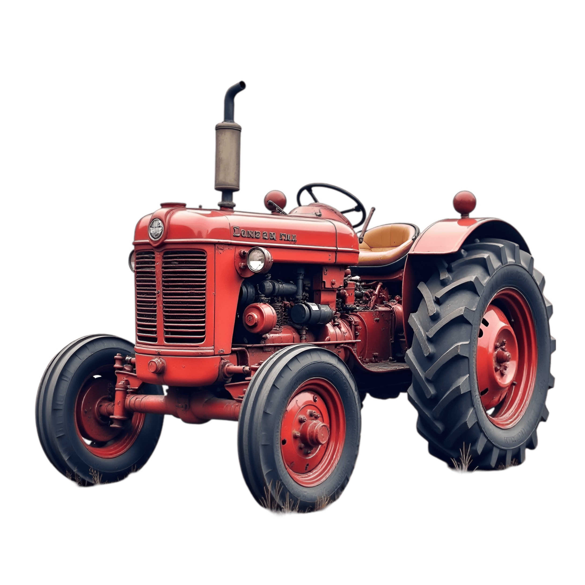

IA reduz em até 40% o uso de água no PR
Sensores conectados monitorom o solo em tempo real...
Um projeto-piloto no oeste do Paraná utiliza inteligência artificial e sensores IoT para otimizar a irrigação de soja e milho. O sistema automatizado reduz em até 40% o consumo hídrico e 25% na energia, sendo expandido para Mato Grosso e Rio Grande do Sul.
Tratores elétricos e biometano ganham força no campo
Modelos reduzem a emissão de carbono a zero aproveitando resíduos da própria fazenda...
A transição energética no agro brasileiro promove o uso de tratores a biometano e elétricos, reaproveitando resíduos orgânicos para gerar energia limpa. Essa prática de economia circular elimina custos com combustíveis fósseis e melhora a eficiência e sustentabilidade no campo.
Sensores de baixo custo feitos com material reciclado ajudam pequenos produtores
Alunos de escolas públicas criam dispositivos com Arduino para monitorar estufas hortaliças...
Estudantes de escolas públicas criaram sensores de monitoramento de baixo custo, utilizando materiais recicláveis e tecnologia acessível para pequenos agricultores. Esses dispositivos, via aplicativos de mensagem, ajudam no manejo, controle de pragas e aumento da produtividade.
Teste seu conhecimento
Qual é a principal vantagem do uso de tratores elétricos e a biometano no campo?
Mitos vs Fatos no Agro Moderno
A tecnologia afasta as novas gerações e os jovens do trabalho no campo.
A digitalização atrai os jovens, transformando o agro em um setor conectado, tecnológico e cheio de oportunidades de carreira técnica.
Tratores e máquinas agrícolas sempre serão grandes poluidores devido ao diesel.
Os novos motores elétricos e a biometano usam energia limpa e resíduos da própria fazenda, reduzindo a emissão de carbono a zero.
Aumentar a produção de alimentos exige desmatar mais terras.
Com drones, inteligência artificial e sensores IoT, o produtor aumenta a eficiência na mesma área, preservando os recursos naturais.
A Evolução do Campo
Passado

- Dominado por práticas tradicionais
- Uso intensivo de mão de obra e animais
- Baixa eficiência e produtividade
- Dependência de condições climáticas
- Desmatamento para expansão agrícola
- Maquinários mais poluentes
Presente

- Integração de tecnologia e inovação
- Uso de drones, sensores e IA para monitoramento
- Tratores elétricos e biometano para sustentabilidade
- Agricultura de precisão para eficiência
- Redução do impacto ambiental
- Conexão com o mercado global
A tecnologia transforma a terra, a inovação alimenta o futuro.
A evolução do campo vai muito além das máquinas: ela mostra como a inteligência e a sustentabilidade transformaram a produção de alimentos. Do trabalho braçal e da tração animal do passado até a precisão dos tratores autônomos, drones e sensores do presente, o agro se modernizou para produzir mais respeitando o meio ambiente. Conectar a tradição da terra com a tecnologia de ponta é o que garante o desenvolvimento e o futuro do nosso planeta.